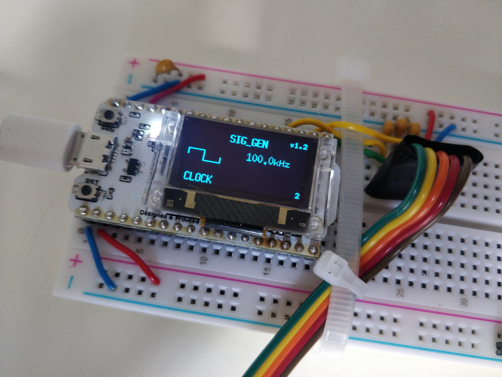

Lab 1 - Signals and Scope
Task 1 - Learning to control the signal generator
By following the instructions, I tried out using the different signal settings. Initially this did not work - I was unable to switch from the sine wave signal option, subsequently I realised that I had a wire wrong which I fixed, allowing me to test out the options.

Task 2 - Setting up the oscilloscope
The oscilloscope was set up as per the instructions
Task 3 - Understanding the DSO display
By using the provided documents to learn how to extract information from the oscilloscope display, I determined that the waveform had the following characteristics:
A square wave with a period of 1 ms, an amplitude of 0.3V, and therefore a frequency of 1 kHz.
Task 4 - Controlling the DSO with the buttons and the rotary switch
As the ADJ knob is turned after pressing the V/DIV button twice the waveform is moved up and down the y (voltage) axis, maintaining the shape. This is useful as it allows the user to align the bottom of the waveform with the grid and thus make more accurate measurements from it.
The SEC/DIV button exercise was completed. When the timescale is slower than 20ms per division the wave is unable to be properly triggered and displayed causing strange visual effects.

After pressing the SEC/DIV button a second time, the waveform is able to be adjusted along the x (time) axis, allowing it to be aligned with the grid for accurate measurements.
When it is switched to AC, the waveform drifts down the y (voltage) axis to its (neutral) midpoint. This is useful as it tells us the vertical midpoint of the waveform.
Task 5 - Triggering on an oscillation
When the trigger level is moved outside the waveform range, the oscilloscope message changes from “triggered” to “waiting” and the waveform shifts by 0.1 V.
When the trigger edge is changed, the waveform is shifted by radians. Changing this setting affects whether the waveform starts on the top of bottom edge of the waveform.
Task 6 - Measure DC Voltage
After setting the signal generator to output a 2.5 V DC current, the multimeter read 2.42 V whereas the oscilloscope read ~0.2 V. 2.6 V.
For DC voltage calibration I got the following values:
| Voltage Setting | Measured Voltage |
|---|---|
| 3.0 | 2.87 |
| 2.5 | 2.42 |
| 2.0 | 1.95 |
| 1.5 | 1.49 |
| 1.0 | 1.03 |
| 0.5 | 0.56 |
Task 7 - Measure sine wave signal
After setting up the sine wave on the signal generator as set out by the instructions, I made the following measurements:
The multimeter measured a DC voltage of 1.63 V and an AC voltage of 0.25 V. These values are both much lower than those similar to read off the oscilloscope (similar to what was found in task 6) and the DC voltage was much higher than the AC one such takes into account the fluctuations.
For a SIG_GEN frequency of 100 kHz, the oscilloscope measurements were the same apart from the frequency which was now also 100 kHz. The voltage measurements on the multimeter remained the same. However the waveform moved a lot on the oscilloscope screen so was difficult to measure.
Task 8 - Measure PWM signal
Using the oscilloscope, the I measured the signal period to be and therefore the frequency to be , very close to the SIG_GEN settings.
By counting the number of squares the square wave took up and thus calculating the percentage of the period it takes up, I calculated the duty cycle to be 38.7 %, close to the intended 40 %.
The DC voltage is 1.3 V, the AC voltage is 1.89 V. The DC measurement takes the average voltage of the signal over time, whereas the AC measurement takes the maximum voltage, hence the difference.
Task 9 - Measure Exponential signal
The time constant is defined as the time that the exponentially decaying signal takes to decay by a factor of . So you would measure the amount of time (on the oscilloscope) the signal takes to reach 36.8 % of its original voltage.
Other frequencies and time constants result in simple transformations of the original waveform.
Task 10 - UART Signal
After setting up the signal as instructed, I used the scope and observed ta square wave the was constantly changing where the signal turned on and off.
Under odd and no parity, the signal behaviour remains the same.
Task 11 - Test yourself on the unknown signals
The characteristics of the various test signals I observed/calculated are shown below:
| Test Signal # | Characteristics |
|---|---|
| 1 | DC current of 1.21 V |
| 2 | Sine wave signal of frequency 25.4 kHz, 0.4 V pk-pk, with an offset of 1.1 V |
| 3 | Clock signal of frequency 149 Hz |
| 4 | PWM signal of frequency |
| 5 | UART signal ** |
Note
In places above where I crossed out (voltage) values e.g 0.2 V , it is due to the oscilloscope measuring device being set to x10 rather than x1 measurements originally, which caused inaccuracies in my results.